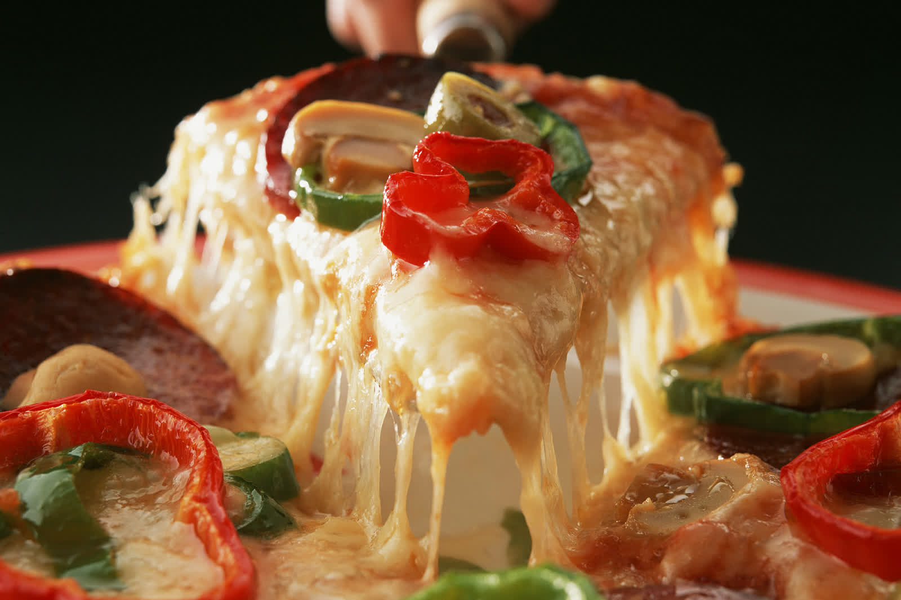

Octubre 2024
Los mejores quesos para acompañar un plato de pasta
La pasta es un clásico de la gastronomía italiana que se ha extendido por todo el mundo. Descubre que quesos combinan mejor con cada tipo de pasta.
Recetas italianas, consejos gastronómicos, ingredientes de temporada y las últimas novedades de nuestro restaurante.
La pasta es un clásico de la gastronomía italiana que se ha extendido por todo el mundo. Descubre que quesos combinan mejor con cada tipo de pasta.
La pasta es uno de los pilares de la cocina italiana, y aunque existen cientos de formas y variedades, la elección entre pasta corta y larga tiene su lógica culinaria.
El verano trae consigo altas temperaturas y la necesidad de buscar maneras refrescantes de disfrutar de la comida italiana.

Tres productos emblemáticos de la gastronomía italiana que a menudo se confunden. Te explicamos que hace unico a cada uno.
La Amatriciana es una de las recetas más emblemáticas de la cocina italiana, originaria de Amatrice. Te contamos los secretos de la receta original.
En nuestro acogedor rincón de Italia en Zaragoza, tenemos el placer de ofrecer una deliciosa selección de platos vegetarianos.
El vino es una parte esencial de la experiencia culinaria italiana. Elegir los vinos adecuados para tu menu puede marcar la diferencia.
La cocina italiana es famosa por su exquisita simplicidad y su enfoque en utilizar ingredientes frescos y de temporada.
La cocina italiana es conocida por su simplicidad, frescura y la habilidad de transformar ingredientes simples en platos extraordinarios.

El Tiramisu, con su combinación irresistiblemente rica de sabores y texturas, se ha ganado un lugar especial en la gastronomía mundial.